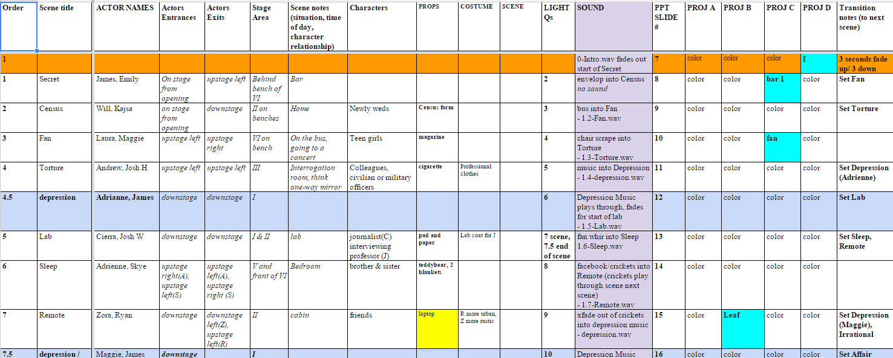
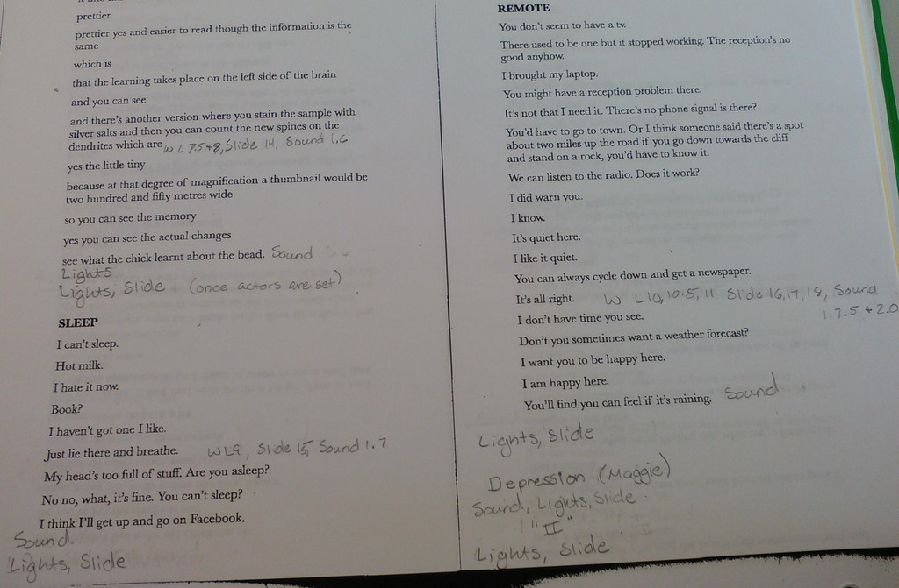
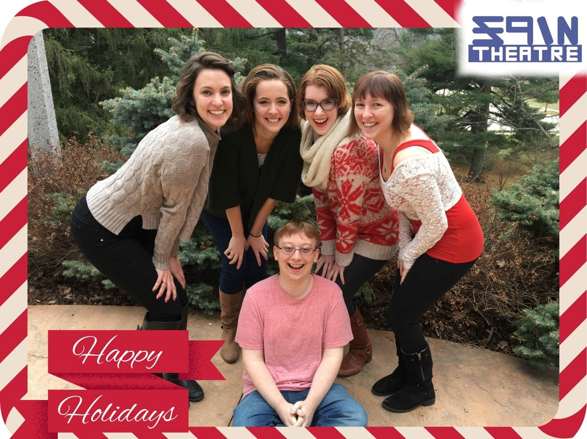
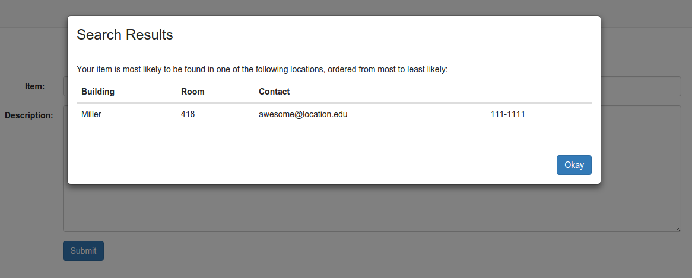

Stage managing this show with the Luther College Visual & Performing Arts department was my first experience as a primary facilitator
of a complex collaborative project. The script leaves the setting and context of each scene up to the production, so the cast, production staff,
and technicians relied on me to ensure clear and consistent communication between everyone involved.

I used this Google spreadsheet to keep the costume, lighting, and sound designers informed of any decisions that were made or changed during each rehearsal.
I recorded each day’s changes in a new color to make them easy to find, as well as sending out reports after each rehearsal detailing what we worked
on and what we decided or changed. This eased the problem of the designers having to wait for the director and cast to make decisions by making it possible
for the designers to start work on the scenes that were set while the cast continued to experiment with other scenes instead of having to wait for everything
to be decided.

During the performances, I shifted from facilitating the collaboration between the cast, director, and designers to coordinating the light board operator,
the sound board operator, and two projector operators. This is a page from my script, where I wrote out the order of the warnings and cues I needed to
give the technicians in order to effectively and smoothly transition between scenes.

SPIN Theater is the student-run theater group at Luther College. As the technical director, I work with the four other members of the board of directors
(pictured above) to put on shows and events that offer opportunities beyond those offered by the department. Although we each have a focus, we make
decisions together and all step in where ever we are needed. As our artistic director likes to say,
We all do everything.

My senior project at Luther has been to work with four other students to code a web application that will help building administrators track
lost and founditems. This has been my first experience with a long term collaborative coding project, particularly one where we have complete control over our design and implementation. We spent a lot of time at the beginning of the project discussing what we wanted to do and how until we were all on the same page, and we continue to check in with one another as we reach new phases of development.

My primary task so far has been the guest user functionality, which allows students to look up where their lost item is most likely to be.
This functionality incorporates all layers of our application, as it requires the page to communicate with the server which then queries the
database and returns the results to the page to be displayed, as shown above. In order to build it, I researched how to search through a
database when the search terms are not pre-defined, as well as the technologies we are using for our application and how they fit together.
With that knowledge, I was able to develop both the guest search and the primary search functionality for the entire application.
.jpg)
In the summer of 2015 I interned as a software developer with IBM Cloud in Rochester, MN. My primary project was to take a concept
and a handful of guidelines from their security team and turn it into a functioning prototype program by the end of the summer.
With a little guidance from my on-site mentor, I researched the technologies my program would need to interact with and
existing ways to work with them. I then successfully developed the prototype program by putting together the existing interfaces in a way
that, although sometimes unconventional, accomplished the goal the security team had given me.
While assistant stage managing this show at Luther College, I learned to better lead and mentor my peers.
My primary responsibility was to prepare the understudies to step in for any role should an actor fall ill or otherwise have to leave the show.
I worked with them to plan out when they should have the lines memorized, when they could fill in for other actors during rehearsals, and when
they would start to rehearse independently from the rest of the cast. When we did separate from the cast, I led their rehearsals on the
director’s behalf.
When I performed in this Luther College production, I pushed myself to be in tune with and responsive to my scene partner. My character and her
love interest, pictured above,
share several emotionally intimate scenes that rely heavily on subtext. This was especially significant, and in
some ways especially challenging, because my character’s love interest was portrayed by two women over the course of the production.
Whenever I changed from one scene partner to the other, I knew I could not rely on the habits I had already formed. Instead, I challenged myself to respond
truthfully to my partner and the given moment.
I portrayed
Annie, a midwife who assisted a docter in treating wealthy women for hysteria, so many historical factors contributed to my performance. I and several
of my cast mates read The Technology of Orgasm by Rachel P. Maines to better understand the societal ideas surrounding
hysteria and its treatment at the time. I also spent quite a bit of time considering how class differeces should inform the way I responded to the other
characters. In particular, I and the actress portaying Mrs. Daldry, Annie’s love interest (who also happens to be considerably above her in
station), payed close attention to how class barriers would affect our characters’ developing relationship.
I first combined my academic interests with my love of theater when I portrayed Catherine in Luther College’s production of
Proof. Catherine is a young mathematical genius struggling with the idea that she may have inherited both her father’s talent
for mathematics and his mental illness.
My own mathematics background (although it is nowhere near as extensive as Catherine’s),
enabled me to understand the context and significance of the events of the show without becoming intimidated by mathematical terms and references,
which in turn allowed me to spend my time exploring her intense emotional journey.
This was the show where I began to truly understand what it means to listen to your scene partner. Proof is a four person show where each scene
takes place between two or three characters. With such a small cast and so much time together, we had more freedom than
usual to respond to each other and even to the audience. The audience reactions helped us see several of the scenes in the show in new ways,
and we were all attentive enough to each other to be able to explore those variations without worrying that our scene partners would not keep up.
Designing props for this Luther College show was my first experience having a significant role in the design of the show. Arcadia
is a show that not only uses a multitude of props but uses props from two different time periods. The creative team relied on me to keep track of
what props were needed, where they needed to be, and when they needed to get there. I was also in charge of finding or making the majority of the
props themselves, including aging and weathering a ridiculous number of books. Although my work was largely independent, I kept in constant
communication with the director and designers to make sure that my
work stayed consistent with their vision.
Love and Information ~ Fall 2015
SPIN Theater ~ Ongoing
Lost and Found App ~ Ongoing
IBM Cloud ~ Summer 2015
Metamorphoses ~ Spring 2015
In the Next Room ~ Fall 2014
Proof ~ Fall 2013
Arcadia ~ Spring 2013